Manual de uso · versión 3.4 · De un boceto a mano a una imagen realista del mueble, sin internet · Por Eloi A.A.
Boceto a Render 3D convierte el boceto de un mueble en una imagen realista. No usa inteligencia artificial: el mueble se construye con piezas (tableros, patas, tiradores, cajones…) que se dibujan en alzado, planta y perfil, igual que en un plano. Con esas piezas el programa monta el modelo 3D, le pone madera, luz y sombras, y genera la imagen final en PNG. También abre puertas y cajones, y muestra el mueble despiezado (vista explosionada).
Funciona en cualquier ordenador, sin tarjeta gráfica potente y sin conexión a internet.
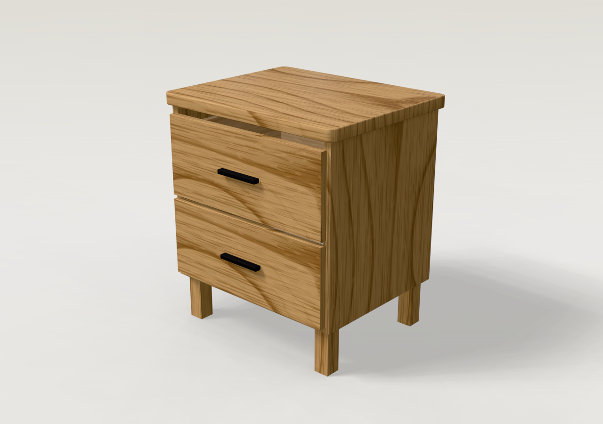
assets/ (programa, texturas, maderas del aula y ejemplo) y ayuda/ (este manual). Si lo copias a un USB, copia la carpeta entera.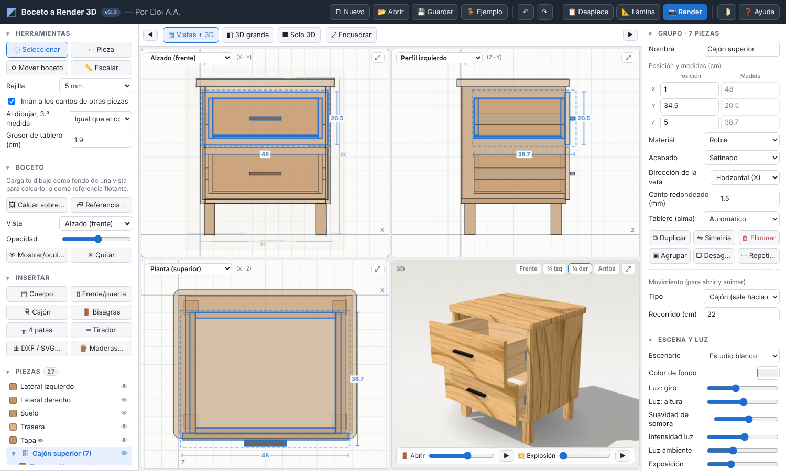
| Zona | Para qué sirve |
|---|---|
| Barra superior | Nuevo, Abrir, Guardar, Ejemplos, Deshacer/Rehacer, 📋 Despiece (hoja de cálculo, MUEBLECAD o Anidador), 📐 Lámina técnica, ▱ MUEBLECAD, 📷 Render, modo oscuro y esta ayuda. |
| Panel izquierdo | Herramientas de dibujo, rejilla e imán, boceto de fondo, Insertar (cuerpo, frentes, cajón, bisagras, patas, tirador, DXF/SVG, maderas) y la lista de piezas y grupos. |
| Centro | Tres vistas 2D (cada una puede ser la que elijas) y la vista 3D. Bajo el 3D están los deslizadores 🚪 Abrir y 💥 Explosión. Con 3D grande o Solo 3D cambias la distribución. |
| Panel derecho | Medidas, material, tablero y cantos de lo seleccionado; botones de duplicar, simetría, grupos y series; movimiento del grupo; escenario, luz, objetivo y desenfoque. |
Todas las medidas van en centímetros. El mueble se coloca así:
| Vista | Se mira desde | Ejes en pantalla |
|---|---|---|
| Alzado | Delante | X horizontal, Y vertical |
| Planta | Arriba (va debajo del alzado) | X horizontal, Z vertical: el frente queda abajo |
| Perfil izquierdo | La izquierda (va a la derecha del alzado) | Z horizontal: el frente queda a la derecha; Y vertical |
Cada uno de los tres paneles 2D tiene arriba un desplegable para elegir qué vista muestra. Puedes poner cualquiera de estas seis, y repetirlas si quieres:
| Vista | Se mira desde | En pantalla |
|---|---|---|
| Alzado (frente) | Delante | X hacia la derecha, Y hacia arriba |
| Vista posterior | Detrás | X hacia la izquierda (la izquierda del mueble queda a la derecha) |
| Planta (superior) | Arriba | X hacia la derecha; el frente abajo |
| Vista hormiga (inferior) | Abajo | X hacia la izquierda; el frente abajo |
| Perfil izquierdo | La izquierda | El frente a la derecha |
| Perfil derecho | La derecha | El frente a la izquierda |
En todas se dibuja, se mueve y se seleccionan piezas igual; las flechas del teclado mueven hacia donde apuntan en pantalla. El panel que eliges se recuerda para la próxima vez.
El botón ⤢ de cada panel (también el del 3D) lo agranda: ocupa casi toda la zona central y los otros tres quedan pequeños en una columna a la derecha. ⤡ lo devuelve a su tamaño. Los botones «Vistas + 3D», «3D grande» y «Solo 3D» también restauran la distribución.
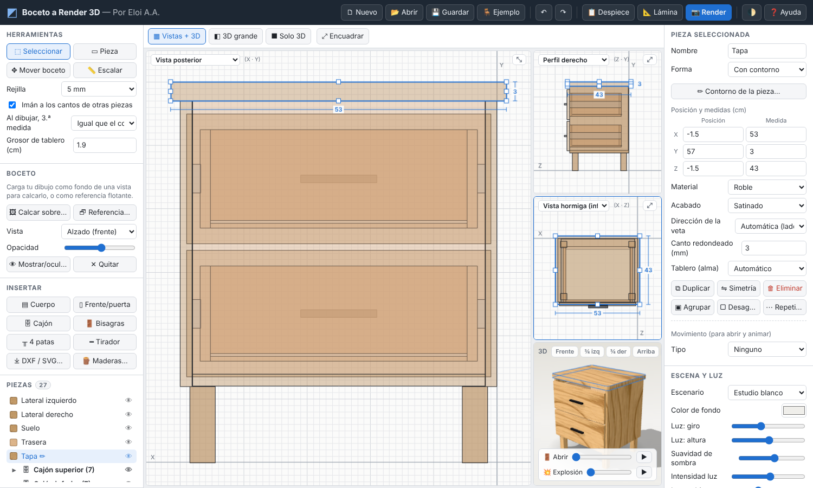
Haz una foto o escanea tu dibujo. Hay dos formas de usarlo, y se pueden combinar:
🗗 Referencia… abre la imagen en una ventana pequeña que puedes mover (arrastrando el título) y cambiar de tamaño (esquina inferior derecha). Es la forma de usar un boceto en perspectiva: lo miras mientras construyes las piezas.
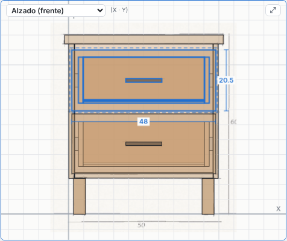
Cada pieza es una caja (tablero, listón, pata cuadrada…), un cilindro (pata o tirador redondo) o una pieza con contorno (apartado 8).
| Botón | Qué crea |
|---|---|
| ▤ Cuerpo | Dos laterales, techo y suelo entre laterales, trasera de MDF opcional y estantes repartidos. |
| ▯ Frente/puerta | Una puerta o varios frentes de cajón apilados con su junta, delante del conjunto. |
| 🗄 Cajón | La caja completa detrás del frente seleccionado (apartado 9). |
| 🚪 Bisagras | Bisagras y giro de la puerta seleccionada (apartado 9). |
| ╥ 4 patas | Cuatro patas cuadradas, redondas o afiladas, agrupadas. Puede subir el mueble para que apoye en ellas. |
| ━ Tirador | Un tirador centrado, arriba, abajo o a un lado del frente seleccionado. Entra en el grupo del frente. |
| 🖊 Pieza a mano… | Una pieza nueva dibujada en MUEBLECAD 2D (apartado 8). |
| ⤓ DXF / SVG… | Piezas con contorno desde un dibujo (apartado 8). |
| 🪵 Maderas… | Fotos de madera, biblioteca y maderas del aula (apartado 11). |
⋯ Repetir… copia lo seleccionado varias veces en una dirección: listones de un somier, baldas a igual distancia, módulos iguales… Indica el número de copias, la dirección (X, Y o Z) y la distancia, que puede ser el hueco libre entre copias o el paso de inicio a inicio.
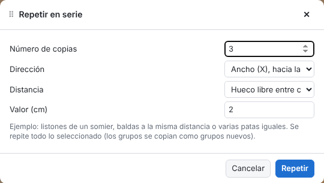
Una pieza puede tener un contorno distinto del rectángulo. El contorno se dibuja en una vista y se extruye con el grosor de la pieza.
Selecciona la pieza y pulsa ✏ Plantilla…:
El contorno se estira con la pieza si luego cambias sus medidas. Para volver a una caja normal, elige «Rectángulo (sin contorno)».
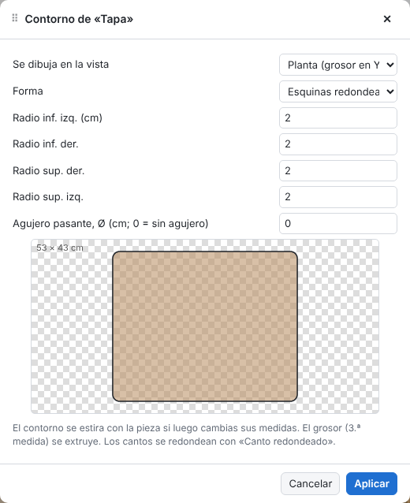
El programa trae su propia copia de MUEBLECAD 2D (en assets/mueblecad/), que se abre en una ventana grande en modo «Pieza 3D». Ahí tienes sus herramientas de dibujo: rectas, polilíneas con arcos, círculos, elipses, splines, empalmes y chaflanes, recortar, alargar, equidistantes, operaciones booleanas, cotas, medidas escritas junto al cursor…
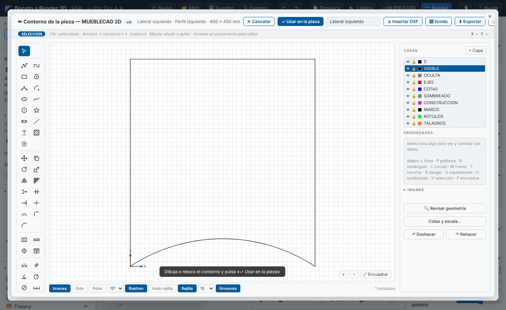
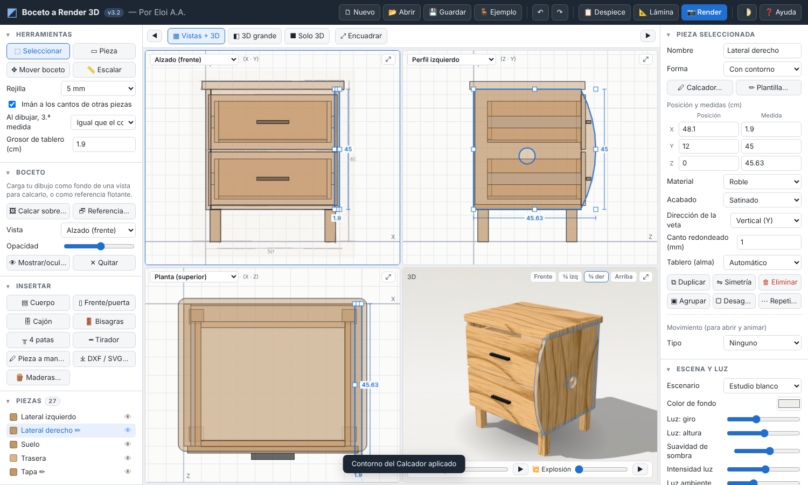
assets/mueblecad/mueblecad.html.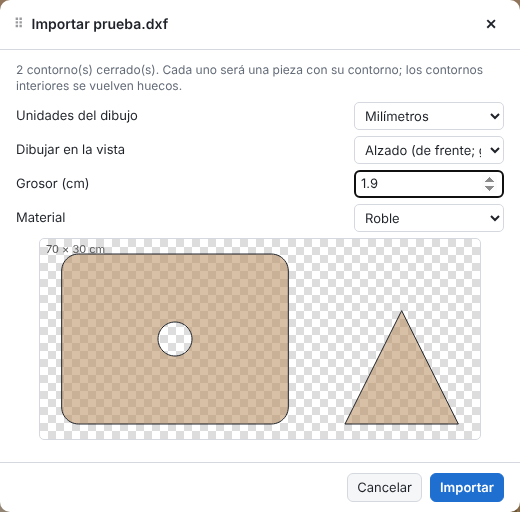
⤓ DXF / SVG… lee un dibujo y crea una pieza por cada contorno cerrado. Los contornos que quedan dentro de otro se convierten en huecos.
Selecciona el frente y pulsa 🗄 Cajón. El programa busca los tableros verticales a cada lado para calcular el hueco y propone las medidas: holgura de las guías, alto y fondo de la caja (en múltiplos de 5 cm, como las guías), grosores y material. Crea dos laterales, contrafrente, trasera, fondo de MDF y, si quieres, las guías de aluminio. El frente, su tirador y la caja quedan en un grupo con movimiento de cajón.
Selecciona la puerta y pulsa 🚪 Bisagras. Elige el lado (izquierda, derecha, arriba o abajo para las abatibles), el tipo (de cazoleta, ocultas por dentro, o pernio, vistas), el número y el ángulo de apertura.
Con un grupo seleccionado (o una sola pieza, que se agrupa sola), en Movimiento elige el tipo: cajón, puerta con bisagras a la izquierda o a la derecha, o abatible arriba o abajo, y su recorrido (cm) o ángulo (°). El giro se hace por el canto trasero de la pieza mayor del grupo.
Bajo el 3D:
Las vistas 2D siempre muestran el mueble cerrado y montado. El render usa el 3D tal como esté.
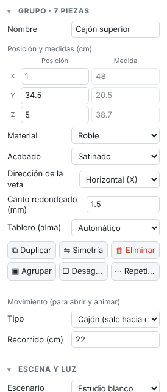
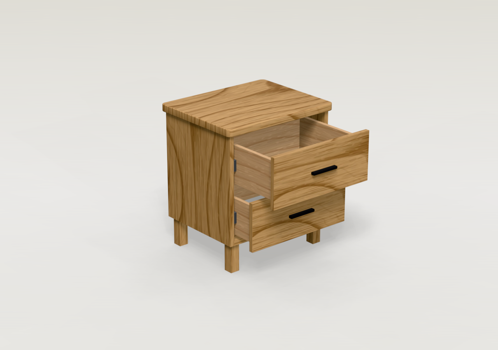
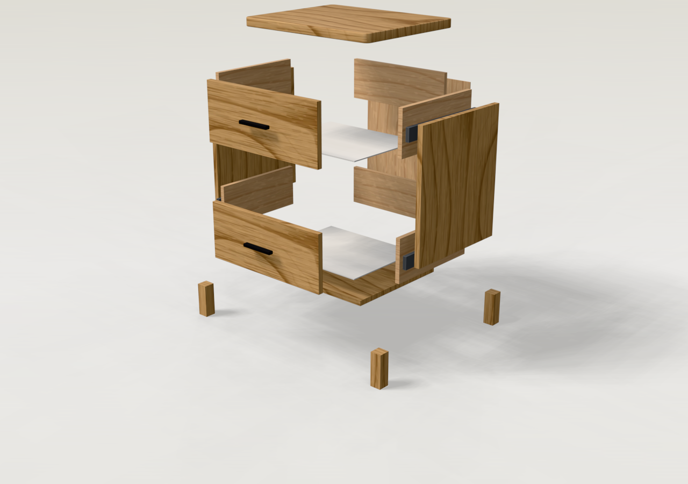
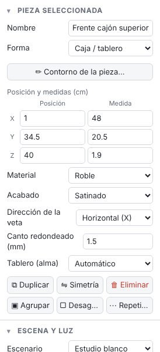
Para tableros se elige de qué está hecho el interior y cómo se terminan los cantos:
| Tablero (alma) | Cómo se ve |
|---|---|
| Automático | Madera maciza si el material es madera; aglomerado si es melamina o lacado. |
| Madera maciza | Los cantos muestran la veta y las testas, los anillos. |
| Aglomerado · MDF · Contrachapado | Según los Cantos: A juego (chapa o PVC del mismo material, con la veta a lo largo del canto), Sin canto (se ve el alma: virutas, MDF o las chapas del contrachapado) o De otro material (por ejemplo, melamina antracita con canto de roble). |
Con canto «a juego» u «otro material», el bloque Grueso del canto (mm) deja elegir el canto de cada lado de la pieza: izquierdo, derecho, inferior, superior, trasero o delantero (solo salen los cuatro lados que tiene cada tablero). Los valores son Sin canto, 0,4, 0,8, 1, 2 y 3 mm; Todos los cambia a la vez, también en varias piezas seleccionadas. Por defecto, 1 mm en todo el contorno.
En el 3D, un lado sin canto enseña el alma. El despiece lo recoge: la hoja de cálculo indica los cantos de cada pieza, el Anidador cuenta los lados largos y anchos con canto y su grueso, y MUEBLECAD los pone lado a lado en cada pieza.
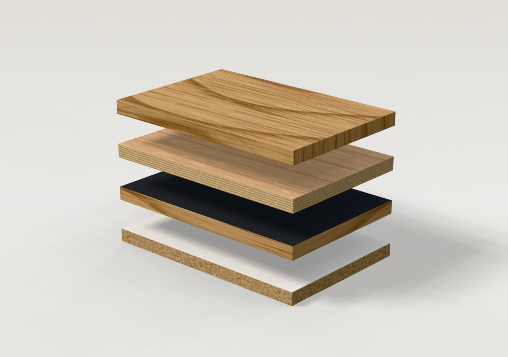
Con fotos de tableros reales el render gana mucho realismo. En 🪵 Maderas… → 📷 Añadir madera desde foto…:
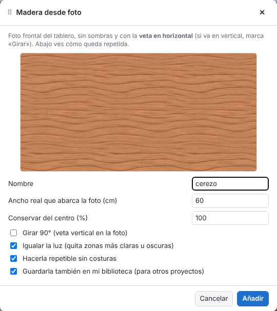
| Lugar | Quién la ve |
|---|---|
| En este proyecto | Va dentro del archivo .boceto3d.json: quien abra el proyecto la tiene. |
| Mi biblioteca | Se guarda en el navegador de este ordenador y aparece en todos tus proyectos. |
| Del aula | Pulsa ⬇ Exportar para el aula y copia el archivo maderas_aula.js en assets/texturas/ (sustituyendo el que hay). Todos los ordenadores con esa carpeta tendrán esas maderas. |
| Control | Efecto |
|---|---|
| Escenario | Estudio blanco, gris u oscuro (fondo liso tipo catálogo) o Salón (suelo de parquet, pared y rodapié). |
| Luz: giro / altura | De dónde viene la luz principal. Una luz alta y de lado (unos 40–60°) da sombras naturales. |
| Suavidad de sombra | Tamaño de la ventana de luz: a más suavidad, sombras más difuminadas. |
| Intensidad / Luz ambiente / Exposición | Fuerza de la luz principal, del relleno y brillo general. |
| Objetivo | 24–35 mm exageran la perspectiva; 85 mm es la típica foto de producto. |
| Desenfoque de fondo | Solo en el render final. Enfoca el centro del mueble y desenfoca lo que está más cerca o más lejos, como una foto con poca profundidad de campo. Cuanto menor es el número f, más desenfoque. Se nota más con objetivos largos y en el escenario Salón. |
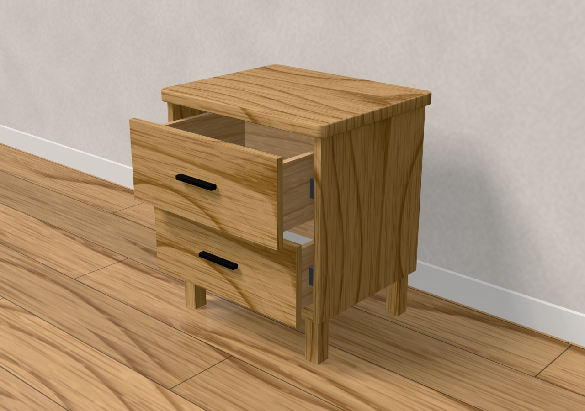
En cada pasada el programa mueve un poco la luz y la cámara y las promedia: sombras suaves, oscurecimiento en juntas y rincones, bordes limpios y, si lo has pedido, desenfoque. A más pasadas, más limpia queda la imagen; con desenfoque conviene usar «Alta · 200».
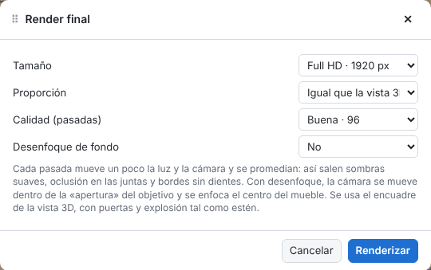
📐 Lámina dibuja el plano del mueble con las vistas que elijas, acotado y con cajetín, a partir de las mismas piezas que el render. La vista previa se actualiza con cada cambio.
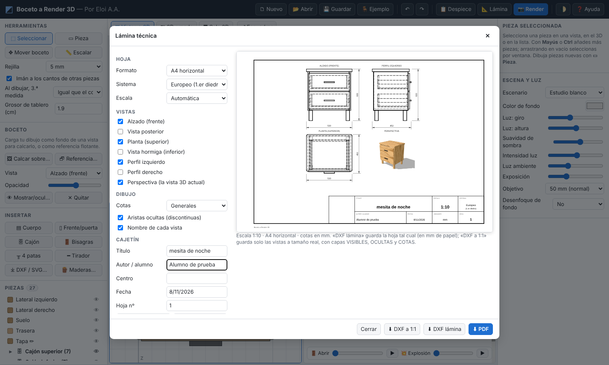
| Opción | Qué hace |
|---|---|
| Formato | A4 o A3 horizontal, con marco (20 mm a la izquierda para encuadernar, 10 mm en el resto). |
| Sistema | Europeo (1.er diedro): la planta debajo del alzado y el perfil izquierdo a su derecha. Americano (3.er diedro): la planta encima y el perfil derecho a la derecha. La vista posterior va siempre a la derecha del todo. |
| Escala | Automática (la mayor que cabe: 1:1, 1:2, 1:5, 1:10, 1:15, 1:20, 1:25, 1:50…) o la que elijas. |
| Vistas | Cualquiera de las seis y la perspectiva, que es una imagen de la vista 3D tal como la tengas (también abierta o explosionada). |
| Cotas | Sin cotas, generales (ancho, alto y fondo totales) o generales y parciales (cadenas con las posiciones de los cantos visibles). Siempre en mm. |
| Aristas ocultas | Dibuja en discontinua lo que queda tapado por otras piezas: cajas de los cajones, traseras, guías… |
| Cajetín | Título, autor o alumno, centro, fecha, nº de hoja y un logo propio (JPG o PNG). La escala, el sistema y las unidades se ponen solos. Se recuerda en el proyecto. |
Se descarga de tres formas:
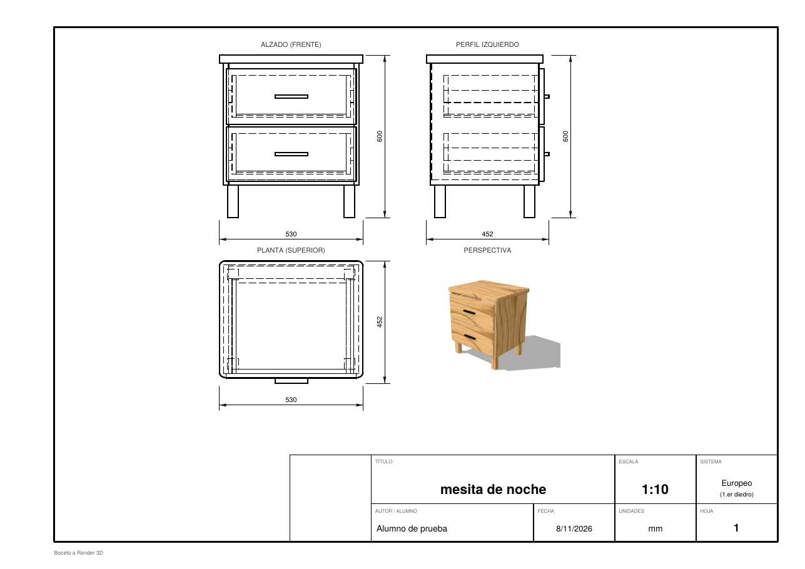
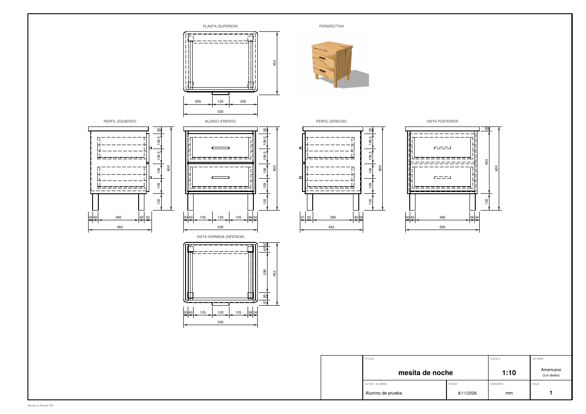
▱ MUEBLECAD (barra superior) abre el mueble en MUEBLECAD 2D, el programa de dibujo técnico para muebles que va dentro de la carpeta (assets/mueblecad/). Se abre en otra pestaña, con dos láminas A3 ya preparadas:
En MUEBLECAD se añaden los herrajes y taladros (sistema 32, bisagras, Minifix, galletas…), se acota, se comprueba y se saca el despiece (también en CSV para el Anidador) y el PDF a escala.
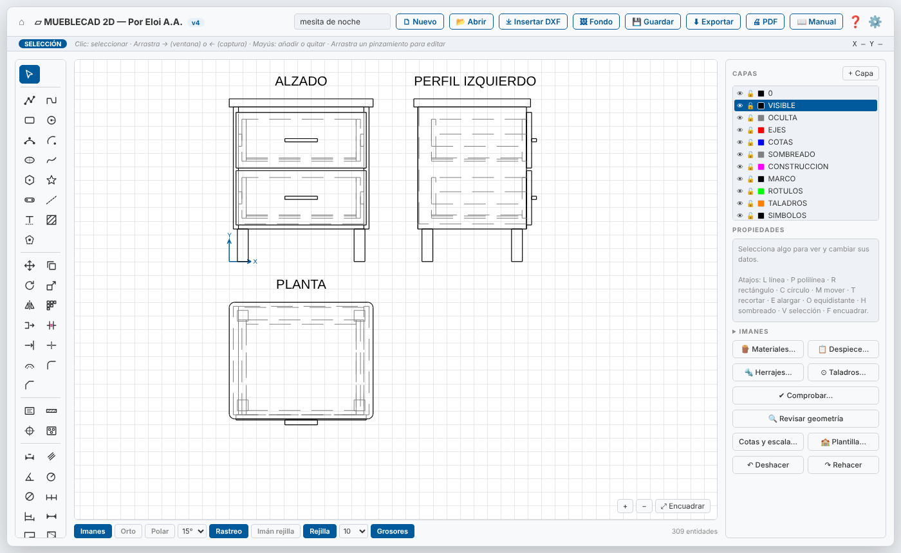
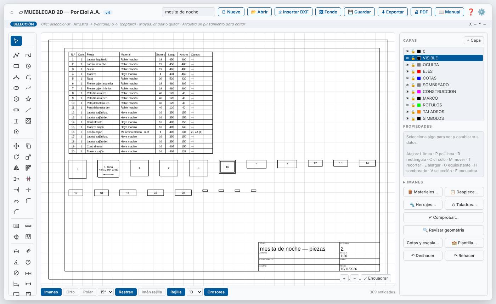
| De Boceto | En MUEBLECAD |
|---|---|
| Material y alma | Un material por combinación, por ejemplo «Roble · aglomerado» (rayado de aglomerado) o «Roble macizo». Se añade a su biblioteca con el grueso. |
| Veta | Las maderas llevan veta: el largo de la pieza va en su dirección. |
| Cantos | Los tableros con alma y canto («a juego» u «otro») llevan canto de 1 mm en todo el contorno; se cambia lado a lado en MUEBLECAD. La madera maciza, sin canto. |
| Contorno | Las piezas con contorno se despliegan con él y sus huecos, con los arcos exactos si se dibujó a mano. |
| Cristal | Material «Vidrio», sin veta ni canto. |
| Herrajes de metal | No pasan como piezas, pero dejan sus taladros en los tableros que tocan: tiradores (dos pasantes Ø4 a la distancia normalizada), bisagras de cazoleta (Ø35 y sus tornillos en la puerta, placa Ø5 en el costado), guías de cajón (tornillos en el costado y en el lateral del cajón) y patas de metal. Son medidas orientativas: revísalas en MUEBLECAD. |
.boceto3d.json con todo: piezas, grupos y movimientos, contornos, bocetos, maderas de fotos, escena y cámara. 📂 Abrir lo recupera (también los proyectos de la versión anterior)..csv (LibreOffice Calc o Excel) con nombre, largo, ancho, grosor, material, observaciones (contorno, tipo de tablero y canto), grupo y cantidad. Las piezas iguales se agrupan..json para abrirlo en MUEBLECAD 2D (apartado 15)..zip preparado para el Anidador de tableros de la Suite CNC (abajo).El .zip contiene:
Roble 19 mm.csv, Melamina blanca 16 mm.csv). Tiene las columnas que lee el Anidador: nombre; largo; ancho; cantidad; veta; canto largo; canto ancho; tipo de canto, en mm.contornos: cada pieza con contorno como proyecto del Calcador (.json), con sus huecos. Si el nombre acaba en (xN), hay N iguales: pon esa cantidad en el Anidador.LEEME.txt con lo anterior. Los herrajes, metales, cristal y piezas cilíndricas no se incluyen.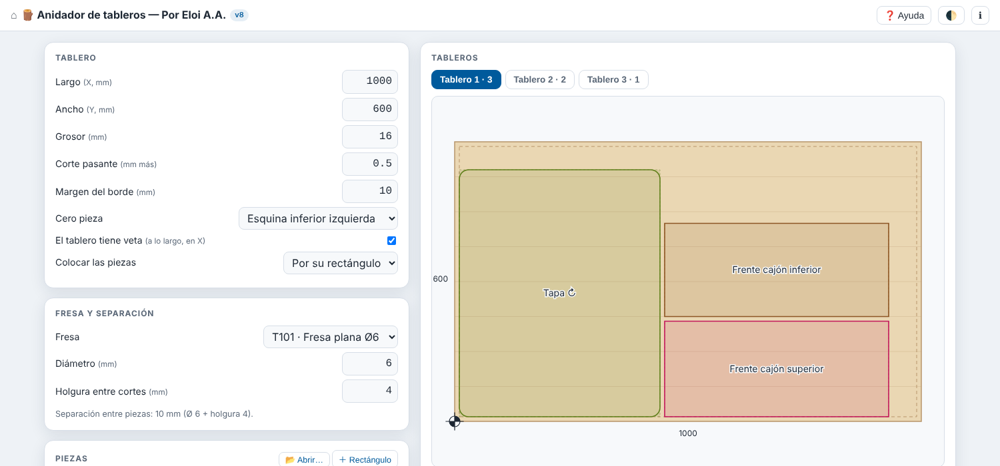
| Tecla | Acción | Tecla | Acción |
|---|---|---|---|
| V | Seleccionar | R | Dibujar pieza |
| Ctrl+Z | Deshacer | Ctrl+Y | Rehacer |
| Ctrl+D | Duplicar | Supr | Eliminar |
| Ctrl+G | Agrupar | Ctrl+Mayús+G | Desagrupar |
| Ctrl+A | Seleccionar todo | Ctrl+S | Guardar |
| ⤢ en un panel | Agrandar / restaurar esa vista | Desplegable del panel | Elegir la vista |
| Mayús/Ctrl+clic | Añadir o quitar de la selección | Alt+clic o doble clic | Una pieza dentro de su grupo |
| Flechas | Mover (×10 con Mayús) | F | Encuadrar todo |
| Espacio + arrastrar | Desplazar la vista | Esc | Quitar selección |